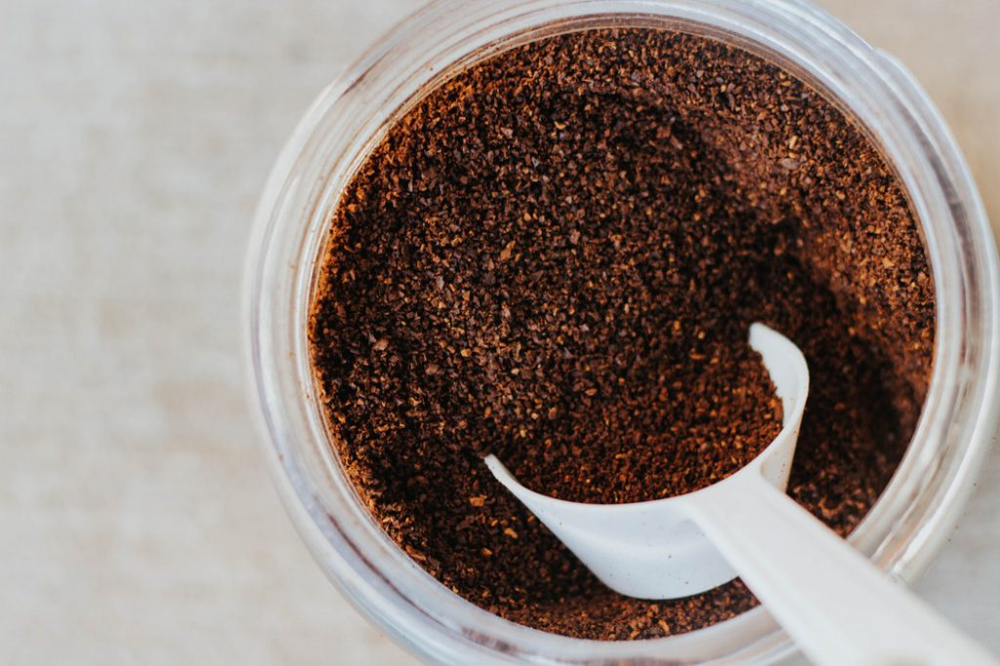

Coffee berries are picked and dried out to form coffee beans.

Coffee beans are roasted, grounded, and then brewed with hot or boiling water to produce the delicious coffee.
| Types of Tools | What They are Called | How they are Used |
|---|---|---|
| Tool used to pick coffee berries | Derricadeiras | The mechanical-like fingers knock off the coffee berries |
| Tool used to roast coffee beans | Rotating Drum | The drum is heated to 240 degrees and the beans are dropped in for 15-20 minutes |